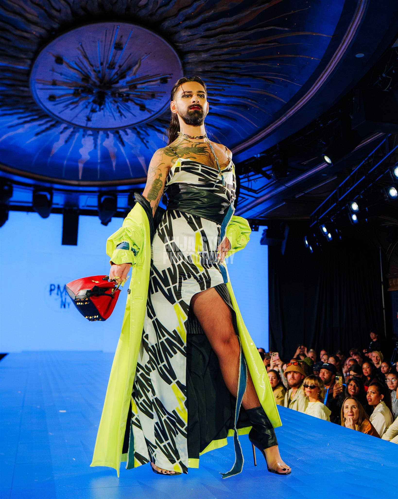

The VOLT Collection

Full creative direction, structural engineering, and production of the SS25/SS26 VOLT Collection. NYFW Runway 7. Press in Harper's Bazaar, Cosmopolitan, Glamour, L'Officiel.
Capsule Collection
Freelance capsule development — bespoke hardware engineering, full 1:1 technical spec packs. Lightning bolt handles, eye-lock hardware. 8 pieces selected for production.
Geometry & Scale

Accessories Designer for Italian powerhouse Cromia — manufacturer for Vivienne Westwood and Valextra. 17–25 seasonal collections annually. Red carpet placements at Venice Film Festival.
Sustainable Innovation

Conceptual Versace capsule exploring the intersection of sustainability and luxury. Regenerated denim processed into Japanese Boro patch fabric. Bespoke Barocco 'V' and 'DV' hardware suite engineered.
Structural Tolerance

Bridging Silicon Valley minimalism and Roman opulence. Punk-Pop brand fusion identity, wearable tech architecture, AI-assisted product visualization. The 'Bitten F' in multi-color mink fur inlay.
new project.